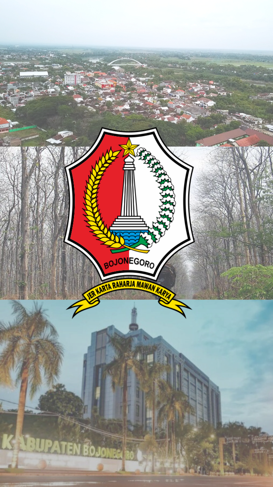

DESTINASI WISATA


BOJONEGORO 📍🗺️
Bojonegoro bukan hanya dikenal dengan minyak dan pertaniannya,
tapi juga menyimpan pesona wisata alam dan budaya yang unik.
Dari hutan jati yang sejuk, aliran Bengawan Solo yang legendaris, hingga tradisi lokal yang kaya cerita — semuanya bisa kamu temukan di sini.
Yuk, jelajahi berbagai destinasi menarik di Bojonegoro dan temukan keindahan yang mungkin belum banyak orang tahu!